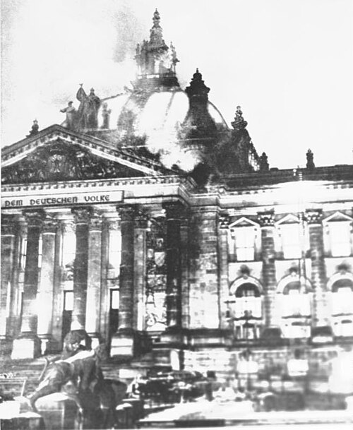

FILE TFF-01 // 1933 GERMANY
The Reichstag Fire

.jpg){kind=link}
CALIBRATED CONCLUSION: Political exploitation is established; prior Nazi orchestration remains contested, with no decisive public forensic proof.
Specific allegation
Claim: Nazi agents set the February 1933 fire as a pretext, rather than Marinus van der Lubbe alone.
Event chronology
Fire consumed the Reichstag on 27 February. Van der Lubbe was arrested inside; the next day emergency powers were issued and opponents arrested under claims of a communist uprising.
Evidentiary record
Trial transcripts, police material, and the emergency decree survive, but the Leipzig trial was conducted under Nazi rule. Van der Lubbe was convicted; other accused communists were acquitted.
Independent and contrary evidence
Nazi exploitation is certain but does not establish who ignited the building. Benjamin Hett argues for a broader plot; other historians consider the case unproven.
Known uncertainty
Political control compromised the investigation, while postwar testimony had its own incentives. No conclusive forensic record identifies multiple incendiaries or excludes a lone perpetrator.
Falsifiable evidence requirements
Authenticated pre-fire orders or independently corroborated forensic evidence of additional entrants could change the account. Proof of later repression alone would not establish orchestration.
Sources and limitations
- German Reichstag Fire Decree (1933)Used to document authorship and immediate political response in the primary record. Limitation: it does not settle the incomplete physical evidence and competing readings of testimony.
- Benjamin Carter Hett, Burning the ReichstagUsed to compare the chronology and interpretation of authorship and immediate political response. Limitation: conclusions depend on the incomplete physical evidence and competing readings of testimony.
- Richard J. Evans, The Coming of the Third ReichUsed as an independent check on authorship and immediate political response. Limitation: it cannot alone establish the incomplete physical evidence and competing readings of testimony.